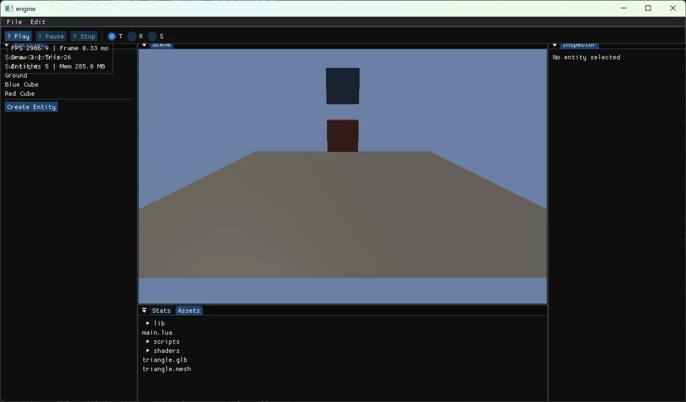
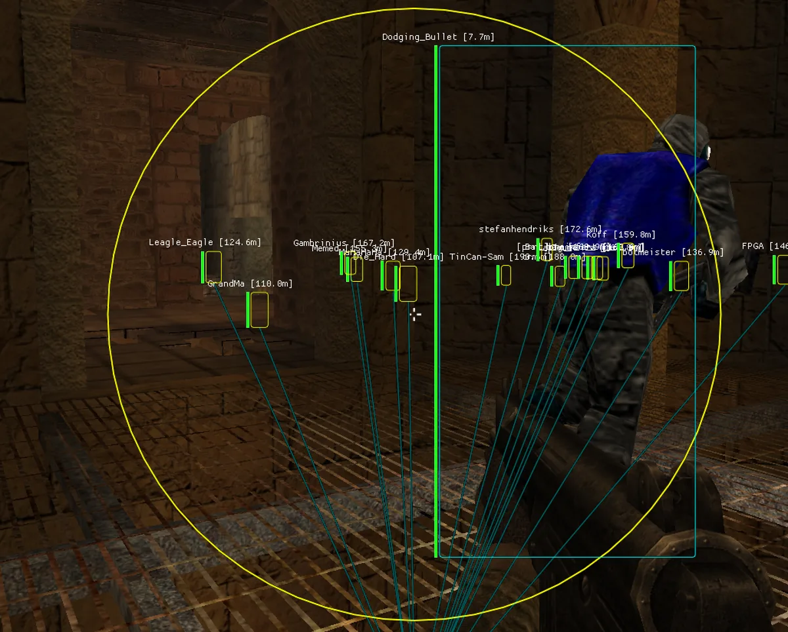

_ ___ _ _ _ _
| |/ _ \| | | | \ | |
_ | | | | | |_| | \| |
| |_| | |_| | _ | |\ |
\___/ \___/|_| |_|_| \_|
systems & engine dev — building from first principles
Last login: Fri Nov 7 23:41:19 2025 from 127.0.0.1
* tip: there is a
live shell at the bottom of this
page. type
help.
john@shimakaze:~$ whoami
John
// building systems from first principles
C/C++
game engine dev
systems programming
low-level
reverse engineering
john@shimakaze:~$ neofetch
+--------+
/ /|
+--------+ |
| | |
| >/dev | +
| |/
+--------+
john@shimakaze
----------------
Statusstudent · active
Focuscustom game engine
LangC / C++20
Interestsengine arch · memory systems ·
rendering pipelines
Shellthe one at the bottom of this
page
Uptime—
Traitquestions existing abstractions ·
rebuilds from first principles instead of reaching for off-the-shelf
john@shimakaze:~$ ls
~/projects
john@shimakaze:~$ cat
~/projects/v1-engine/README.md
# v1 engine
A custom 3D game engine built in C++20 from scratch. Features a custom memory
allocator, ECS framework, and a basic OpenGL rendering pipeline.

john@shimakaze:~$ cat
~/projects/ac_cheat/README.md
# AC_CHEAT
An educational cheat for AssaultCube. Features auto-aim, wallhack, god mode, infinite
ammo, and snaplines to demonstrate memory manipulation and reverse engineering concepts.

john@shimakaze:~$ ./twin
&
[1] 1337 — twin_instance daemon started
twin>
Hey. I'm John's digital twin - ask me about my engine work, how I learn low-level systems, or why I'm not just using Unity.
twin>
I'm listening on the shell below — run
twin to talk to me.